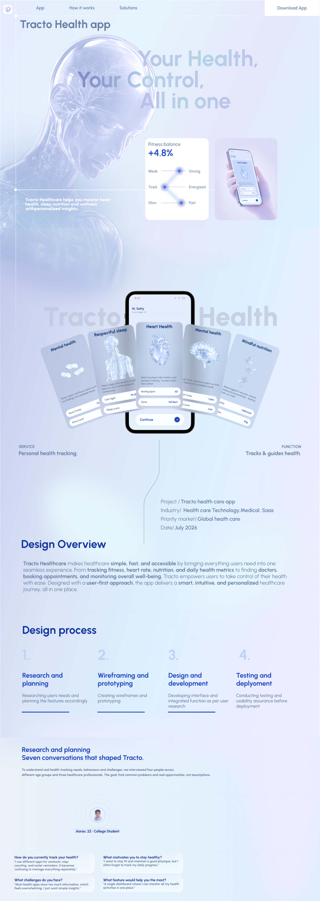
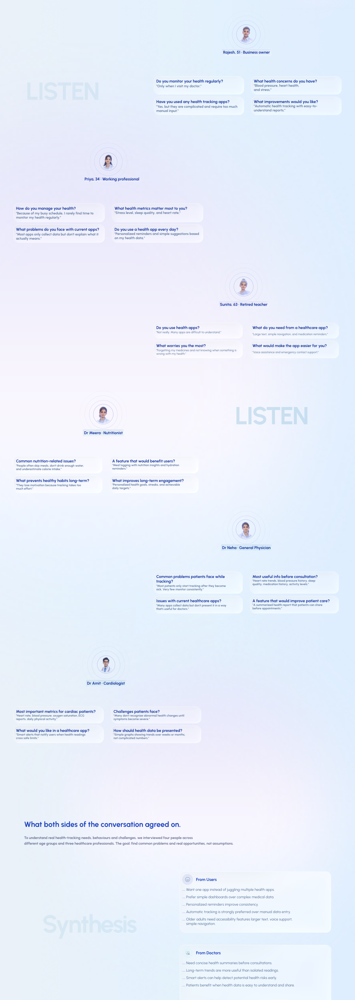
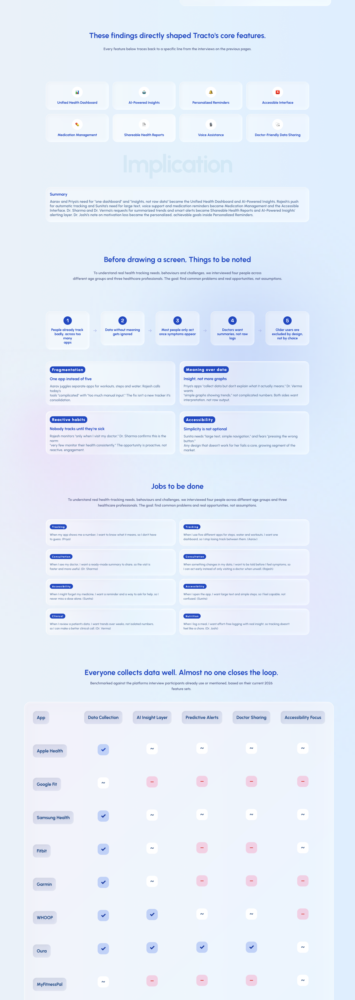
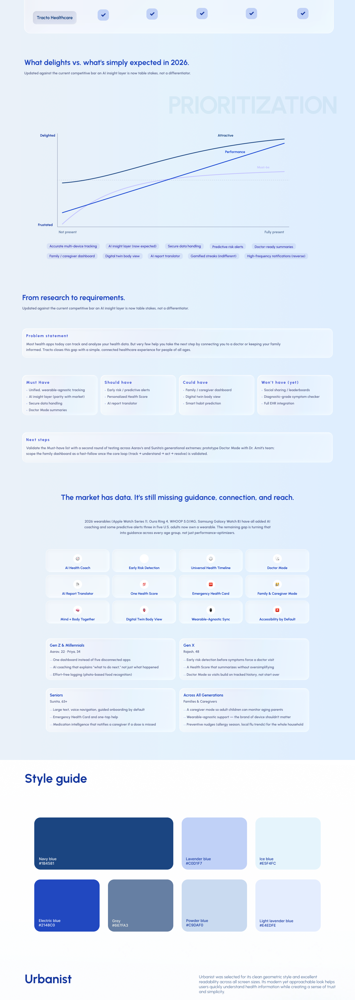
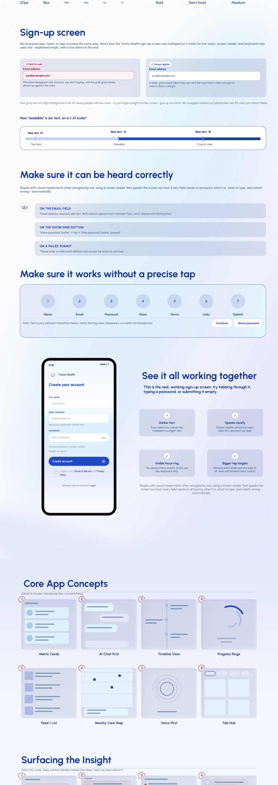
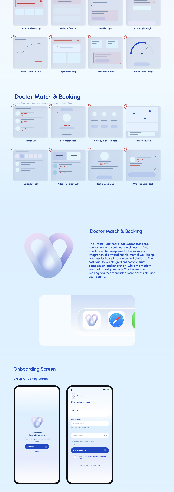
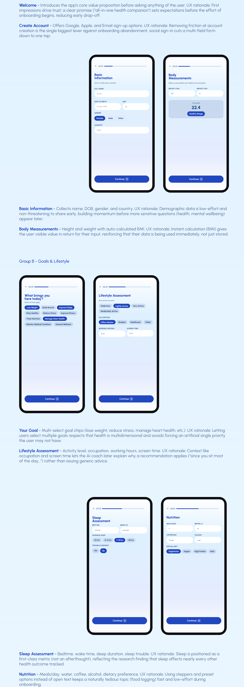
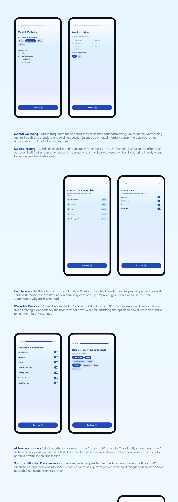
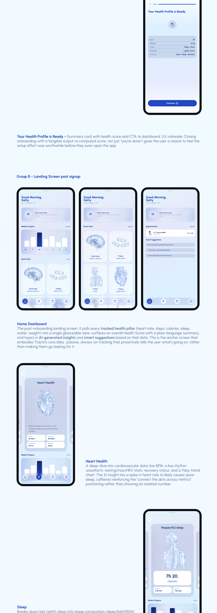
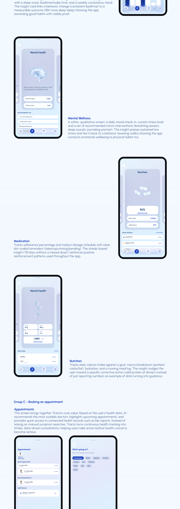
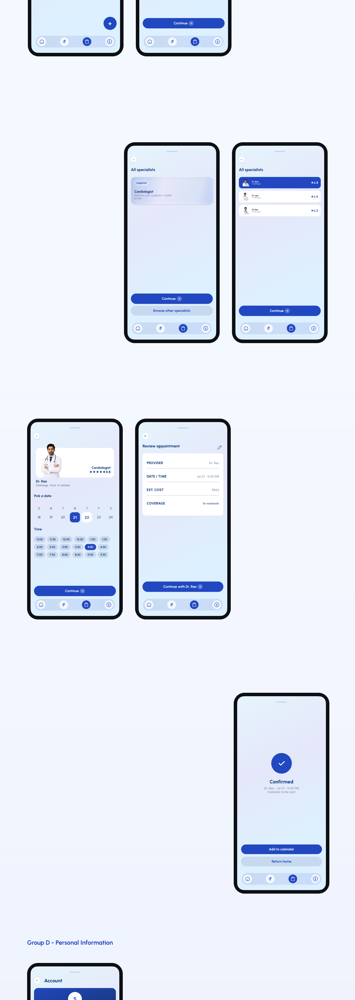
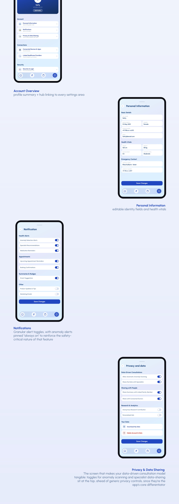
Conclusion
Tracto, wrapped up
What this project is about
Tracto is an all-in-one health companion that unifies tracking, AI insights, and doctor connection across age groups. It turns fragmented wellness data into guidance people can act on—without making health feel clinical or overwhelming.
- 4Age pathways considered
- AIInsight layer designed
- 1Care continuum
- E2EResearch → UI system
Design principles
- Calm over alarm
Health feedback informs without inducing anxiety; severity is shown, never sensationalized.
- Age-aware flows
Needs differ across life stages—structure adapts without fragmenting the product.
- Insight with agency
AI suggestions always pair with a clear next step the user still owns.
- Care continuity
Tracking, reflection, and clinician connection feel like one thread, not three apps.
Design hierarchy
- 01Current state
Today’s vitals and status read first—what’s happening now.
- 02Guided insight
Patterns and recommendations sit just beneath, ready when the user is.
- 03History & trends
Longer arcs support understanding without crowding the moment.
- 04Care network
Doctors, family, and settings remain accessible at the periphery.
Tracto’s design keeps health readable: honest status, gentle insight, and a path to care when it’s needed.
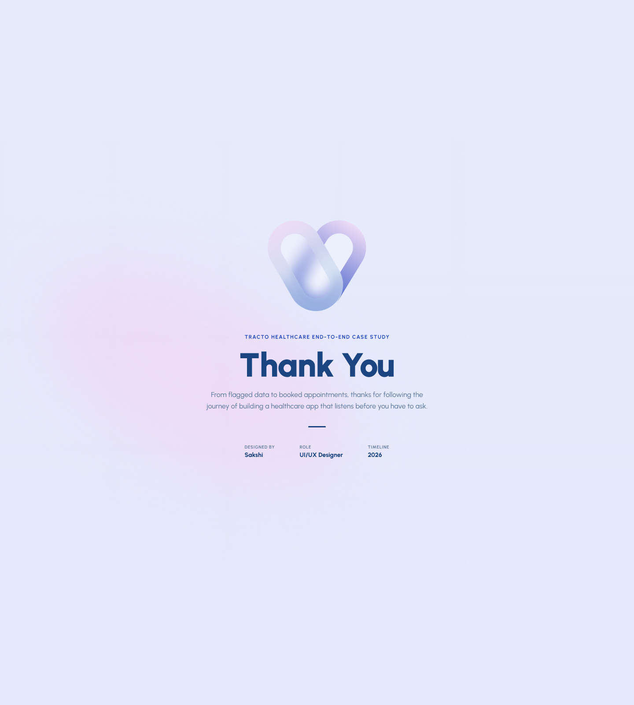